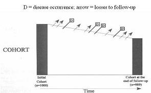

The main advantage of case-control designs is that it allows you to sample the experience of the study base most efficiently.
Stated in other words, case-control designs allow you to make measurements on far fewer subjects than cohort studies but still get the same answer.
The reason to do this is to conserve resources, something that is becoming more and more important these days as funding is drying up. A typical example is when expensive testing on stored biological samples are required for an analysis. It is often prohibitively costly to test everyone in the cohort.
Sampling Cases Within a Cohort
Given that all the cases are diagnosed, how would you sample controls from this cohort for a case-control study?
Think of the selection of cases and controls as occurring from a cohort as in the diagram below.

Three Ways to Sample Controls Within a Cohort
A random sample of the cohort baseline = case-cohort design
(2) Kaiser Permanente Study of Sigmoidoscopy is another example of prevalent sampling.
Cases = colon cancer deaths detectable by sigmoidoscopy: 261
Controls = alive and in Kaiser at time of matched CA death (incidence-density)
4 controls per case
Many important findings have come from well designed case-control studies. This Kaiser study was the first to show strong evidence that screening sigmoidoscopy prevented colon cancer deaths. It had a substantial influence on clinical practice, yet it wasn’t a randomized trial, a study that would have required huge numbers and many years of follow-up. The study was feasible because Kaiser has a large membership, has been in existence for a long time, and has an excellent record keeping system.
Critical Features of Good Case-Control Design
Clearly identifiable study base (preferably a primary study base)
Cases: all, or random sample, of incident diagnoses in the study base
Controls: an unbiased sample of study base to estimate exposure prevalence in non-cases
Measurements preferably based on records or stored biological samples rather than recall
Case-control studies with all of these design features are a strong and valid study design that can produce results as convincing as any other type of observational study.
Measures of Association in a Case Control Study
The odds ratio is the only measure of association available in case-control design.
The odds ratio of disease in the exposed and unexposed
EQUALS the odds ratio of exposure in the diseased and the not diseased
The odds ratio of exposure in the diseased and not diseased that is actually measured in a case-control study,
but it is the odds ratio of disease in the exposed and unexposed that we are interested in.
Fortunately, they are mathematically identical. (See proof of mathematical equivalence.)
The rare disease assumption only looks at the effect of removing potential controls who are diagnosed with the outcome disease.
Some will have left the study base or died, and these changes in the group of non-cases who are sampled can bias the estimate of exposure in the controls.
Retrospective measurement is necessary in case-control studies
Reasons for Choosing Case Control Study Design
There are typically more opportunities for bias and misclassification in case-control studies than in cohort studies
Relative ease with which they can be done has encouraged a lot of badly designed studies
Low cost and shorter time should be an incentive to better, not worse, design
Case Control Study Design Recommendations
Look for a primary study base that can be clearly defined and has good case ascertainment
whenever possible incidence density more often possible
Historically the two chief weaknesses of case-control studies have been inappropriate selection of a control group and poor measurement of exposure.
The former has usually occurred in the setting of hospital-based studies with secondary study bases where it is very difficult to determine the study base that gave rise to the cases.
Use measurements recorded prior to the diagnosis when possible (medical records, etc.) or perform biological measurements on stored specimens. (See the example of the study in the Netherlands on vitamins and bladder cancer)
Poor measurement often occurs from using questionnaire recall of exposures.
If those weaknesses can be avoided, case-control can be a solid valid study design.